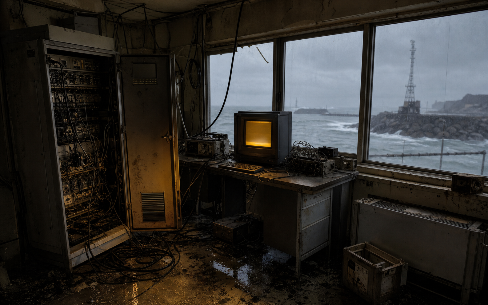

DIGITAL REMAINS / CASE MEM-2140
昼凪記憶端末
廃止された沿岸研究室から、停電直前まで動いていた端末が回収された。あなたの役目は、壊れたファイルを端末コマンドで復元し、最後に送信された警告の「場所・時刻・送信者」を特定すること。
60:00
端末に help と入力して操作を確認してください。
HIRUNAGI-MEMORY-TERM
READ ONLY
解析ノート
- 場所
- 未確定
- 時刻
- 未確定
- 送信者
- 未確定
最後は端末に submit 場所 時刻 送信者 の形で送信してください。